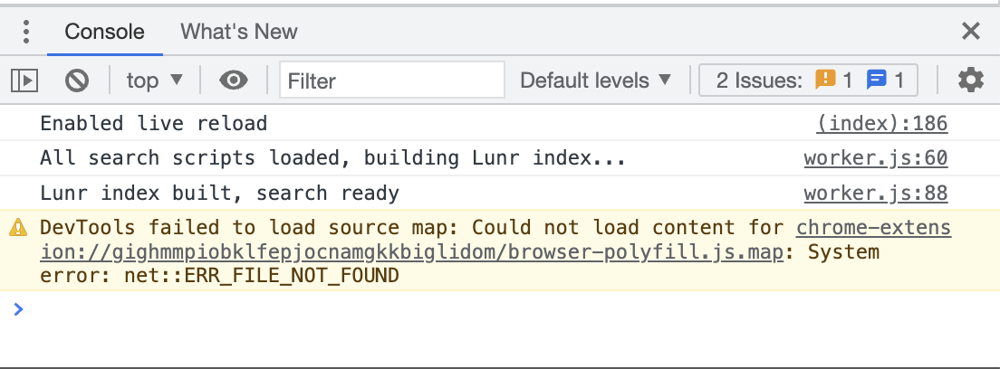

Instagram Unfollowers
Bu harika github projesiyle instagramdaki sizi geri takip etmeyen kisileri bulabilir ve kolayca takipten cikabilirsiniz.
Bu projeye davidarroyo1234'nun bu github reposundan ulasabilirsiniz.
Asagidaki kodu kopyalayin
"use strict";const INSTAGRAM_HOSTNAME="www.instagram.com";let nonFollowersList=[],userIdsToUnfollow=[],isActiveProcess=!1;function sleep(e){return new Promise((n=>{setTimeout(n,e)}))}function getCookie(e){const n=`; ${document.cookie}`.split(`; ${e}=`);if(2===n.length)return n.pop().split(";").shift()}function afterUrlGenerator(e){return`https://www.instagram.com/graphql/query/?query_hash=3dec7e2c57367ef3da3d987d89f9dbc8&variables={"id":"${getCookie("ds_user_id")}","include_reel":"true","fetch_mutual":"false","first":"24","after":"${e}"}`}function unfollowUserUrlGenerator(e){return`https://www.instagram.com/web/friendships/${e}/unfollow/`}function getElementByClass(e){const n=document.querySelector(e);if(null===n)throw new Error(`Unable to find element by class: ${e}`);return n}function getUserById(e){const n=nonFollowersList.find((n=>n.id.toString()===e.toString()));return void 0===n&&console.error(`Unable to find user by id: ${e}`),n}function copyListToClipboard(){const e=[...nonFollowersList].sort(((e,n)=>e.username>n.username?1:-1));let n="";e.forEach((e=>{n+=e.username+"\n"})),copyToClipboard(n)}async function copyToClipboard(e){await navigator.clipboard.writeText(e),alert("List copied to clipboard!")}function onToggleUser(){getElementByClass(".selected-user-count").innerHTML=`[${userIdsToUnfollow.length}]`}function toggleUser(e){userIdsToUnfollow=-1===userIdsToUnfollow.indexOf(e)?[...userIdsToUnfollow,e]:userIdsToUnfollow.filter((n=>n!==e)),onToggleUser()}function toggleAllUsers(e=!1){document.querySelectorAll(".account-checkbox").forEach((n=>n.checked=e)),userIdsToUnfollow=e?nonFollowersList.map((e=>e.id)):[],onToggleUser()}function renderResults(e){const n=[...e].sort(((e,n)=>e.username>n.username?1:-1));getElementByClass(".toggle-all-checkbox").disabled=!1;const t=getElementByClass(".results-container");t.innerHTML="";let o="";n.forEach((e=>{const n=-1!==userIdsToUnfollow.indexOf(parseInt(e.id,10)),r=e.username.substring(0,1).toUpperCase();o!==r&&(o=r,t.innerHTML+=`<div class='alphabet-character'>${o}</div>`),t.innerHTML+=`<label class='result-item'>\n <div class='flex grow align-center'>\n <img class='avatar' src=${e.profile_pic_url} /> \n <div class='flex column'>\n <a class='fs-xlarge' target='_blank' href='../${e.username}'>${e.username}</a>\n <span class='fs-medium'>${e.full_name}</span>\n </div>\n ${e.is_verified?" <div class='verified-badge'>✔</div>":""}\n ${e.is_private?"<div class='flex justify-center w-100'>\n <span class='private-indicator'>Private</span>\n </div>":""}\n </div>\n <input\n class='account-checkbox'\n type='checkbox'\n onchange='toggleUser(${e.id})'\n ${n?"checked":""} />\n </label>`}))}async function run(e){getElementByClass(".run-scan").remove(),getElementByClass(".include-verified-checkbox").disabled=!0,nonFollowersList=await getNonFollowersList(e),getElementByClass(".copy-list").disabled=!1}function renderOverlay(){let e=!0;document.body.innerHTML=`\n <main class='iu'>\n <div class='overlay'>\n <header class='top-bar'>\n <div class='logo' onclick='location.reload()'>InstagramUnfollowers</div>\n <label class='flex align-center'>\n <input type='checkbox' class='include-verified-checkbox' ${e?"checked":""} /> Include verified\n </label>\n <button class='copy-list' onclick='copyListToClipboard()' disabled>COPY LIST</button>\n <button class='fs-large clr-red' onclick='unfollow()'>UNFOLLOW <span class='selected-user-count'>[0]</span></button>\n <input type='checkbox' class='toggle-all-checkbox' onclick='toggleAllUsers(this.checked)' disabled />\n </header>\n\n <button class='run-scan'>RUN</button>\n <div class='results-container'></div>\n\n <footer class='bottom-bar'>\n <div>Non-followers: <span class='nonfollower-count' /></div>\n <div class='sleeping-text'></div>\n <div class='progressbar-container'>\n <div class='progressbar-bar'></div>\n <span class='progressbar-text'>0%</span>\n </div>\n </footer>\n </div>\n </main>`,getElementByClass(".run-scan").addEventListener("click",(()=>run(e))),getElementByClass(".include-verified-checkbox").addEventListener("change",(()=>e=!e))}async function getNonFollowersList(e=!0){if(isActiveProcess)return;let n=[],t=!0,o=0,r=0,s=-1;isActiveProcess=!0;let l=`https://www.instagram.com/graphql/query/?query_hash=3dec7e2c57367ef3da3d987d89f9dbc8&variables={"id":"${getCookie("ds_user_id")}","include_reel":"true","fetch_mutual":"false","first":"24"}`;const i=getElementByClass(".progressbar-bar"),a=getElementByClass(".progressbar-text"),c=getElementByClass(".nonfollower-count"),d=getElementByClass(".sleeping-text");for(;t;){let u;try{u=await fetch(l).then((e=>e.json()))}catch(e){console.error(e);continue}-1===s&&(s=u.data.user.edge_follow.count),t=u.data.user.edge_follow.page_info.has_next_page,l=afterUrlGenerator(u.data.user.edge_follow.page_info.end_cursor),r+=u.data.user.edge_follow.edges.length,u.data.user.edge_follow.edges.forEach((t=>{!e&&t.node.is_verified||t.node.follows_viewer||n.push(t.node)}));const f=`${Math.ceil(r/s*100)}%`;a.innerHTML=f,i.style.width=f,c.innerHTML=n.length.toString(),renderResults(n),await sleep(Math.floor(400*Math.random())+1e3),o++,o>6&&(o=0,d.style.display="block",d.innerHTML="Sleeping 10 secs to prevent getting temp blocked...",await sleep(1e4)),d.style.display="none"}return i.style.backgroundColor="#59A942",a.innerHTML="DONE",isActiveProcess=!1,n}async function unfollow(){if(isActiveProcess)return;if(0===userIdsToUnfollow.length)return void alert("Must select at least a single user to unfollow");if(!confirm("Are you sure?"))return;let e=getCookie("csrftoken");if(void 0===e)throw new Error("csrftoken cookie is undefined");const n=getElementByClass(".sleeping-text"),t=getElementByClass(".progressbar-bar"),o=getElementByClass(".progressbar-text");getElementByClass(".toggle-all-checkbox").disabled=!0;const r=getElementByClass(".results-container");r.innerHTML="";const s=()=>window.scrollTo(0,r.scrollHeight);o.innerHTML="0%",t.style.width="0%",isActiveProcess=!0;let l=0;for(const i of userIdsToUnfollow){const a=getUserById(i);try{await fetch(unfollowUserUrlGenerator(i),{headers:{"content-type":"application/x-www-form-urlencoded","x-csrftoken":e},method:"POST",mode:"cors",credentials:"include"}),r.innerHTML+=`<div class='p-medium'>Unfollowed\n <a class='clr-inherit' target='_blank' href='${a.username}'> ${a.username}</a>\n <span class='clr-cyan'> [${l+1}/${userIdsToUnfollow.length}]</span>\n </div>`}catch(e){console.error(e),r.innerHTML+=`<div class='p-medium clr-red'>Failed to unfollow ${a.username} [${l+1}/${userIdsToUnfollow.length}]</div>`}l+=1;const c=`${Math.ceil(l/userIdsToUnfollow.length*100)}%`;if(o.innerHTML=c,t.style.width=c,s(),i===userIdsToUnfollow[userIdsToUnfollow.length-1])break;await sleep(Math.floor(2e3*Math.random())+4e3),l%5==0&&(n.style.display="block",n.innerHTML="Sleeping 5 minutes to prevent getting temp blocked...",s(),await sleep(3e5)),n.style.display="none"}t.style.backgroundColor="#59A942",o.innerHTML="DONE",isActiveProcess=!1,r.innerHTML+="<hr /><div class='fs-large p-medium clr-green'>All DONE!</div><hr />",s()}function init(){location.hostname===INSTAGRAM_HOSTNAME?(document.title="InstagramUnfollowers",renderOverlay()):alert("Can be used only on Instagram routes")}window.addEventListener("beforeunload",(e=>{if(isActiveProcess)return(e=e||window.event)&&(e.returnValue="Changes you made may not be saved."),"Changes you made may not be saved."})),init();const styleMarkup="html {\n background-color: #222 !important; }\n html .iu {\n margin-bottom: 10rem; }\n html .iu .overlay {\n background-color: #222;\n color: #fff;\n height: 100%;\n font-family: system-ui; }\n html .iu header.top-bar {\n position: fixed;\n top: 0;\n left: 0;\n right: 0;\n display: flex;\n align-items: center;\n justify-content: space-between;\n padding: 1rem;\n height: 2.5rem;\n background-color: #333;\n z-index: 1; }\n html .iu header .logo {\n font-family: monospace;\n font-size: 1.5em;\n cursor: pointer; }\n html .iu footer.bottom-bar {\n position: fixed;\n bottom: 0;\n left: 0px;\n right: 0px;\n display: flex;\n align-items: center;\n justify-content: space-between;\n padding: 1rem;\n background-color: #000;\n font-weight: bold;\n z-index: 1; }\n html .iu label {\n cursor: pointer; }\n html .iu input[type='checkbox'] {\n height: 1.1rem;\n width: 1.1rem; }\n html .iu a {\n color: inherit;\n text-decoration-color: transparent;\n transition: text-decoration-color 0.1s; }\n html .iu a:hover {\n text-decoration-color: inherit; }\n html .iu button {\n background: none;\n border: none;\n padding: 0;\n cursor: pointer; }\n html .iu button.copy-list {\n color: white;\n font-size: 1rem; }\n html .iu button.run-scan {\n position: absolute;\n left: 50%;\n top: 50%;\n transform: translate(-50%, -50%);\n font-size: 2em;\n color: white;\n border: 1px solid white;\n height: 160px;\n width: 160px;\n border-radius: 50%; }\n html .iu .progressbar-container {\n width: 175px;\n height: 30px;\n border-radius: 5px;\n position: relative;\n border: 1px solid #7b7777; }\n html .iu .progressbar-bar {\n width: 0;\n height: 100%;\n background-color: #7b7777; }\n html .iu .progressbar-text {\n position: absolute;\n top: 50%;\n left: 50%;\n transform: translate(-50%, -50%); }\n html .iu .sleeping-text {\n color: yellow; }\n html .iu .results-container {\n transform: translateY(75px); }\n html .iu .results-container .alphabet-character {\n margin: 1rem;\n padding: 1rem;\n font-size: 2em;\n border-bottom: 1px solid #333; }\n html .iu .results-container .result-item {\n display: flex;\n align-items: center;\n padding: 1rem;\n border-radius: 3px;\n cursor: pointer; }\n html .iu .results-container .result-item .avatar {\n width: 75px;\n border-radius: 50%; }\n html .iu .results-container .result-item .verified-badge {\n background-color: #49adf4;\n border-radius: 50%;\n padding: 0.2rem 0.3rem;\n font-size: 0.45em;\n height: fit-content;\n transform: translateY(-15px); }\n html .iu .results-container .result-item .private-indicator {\n border: 2px solid #51bb42;\n border-radius: 25px;\n padding: 0.5rem;\n color: #51bb42;\n font-weight: 500; }\n\n/** HELPERS */\n.flex {\n display: flex; }\n .flex.align-center {\n align-items: center; }\n .flex.justify-center {\n justify-content: center; }\n .flex.column {\n flex-direction: column; }\n\n.grow {\n flex: 1; }\n\n.w-100 {\n width: 100%; }\n\n.p-small {\n padding: 0.5rem; }\n\n.p-medium {\n padding: 1rem; }\n\n.p-large {\n padding: 1.5rem; }\n\n.p-xlarge {\n padding: 2rem; }\n\n.fs-small {\n font-size: 0.5rem; }\n\n.fs-medium {\n font-size: 1rem; }\n\n.fs-large {\n font-size: 1.5rem; }\n\n.fs-xlarge {\n font-size: 2rem; }\n\n.clr-inherit {\n color: inherit; }\n\n.clr-red {\n color: #bd2121; }\n\n.clr-green {\n color: #56d756; }\n\n.clr-cyan {\n color: #00ffff; }\n",elStyle=document.createElement("style");elStyle.innerHTML=styleMarkup,document.head.appendChild(elStyle);
Instagram hesabiniza girin ve developer console'u acin
Windows: Ctrl+Shift+J
MacOS: ⌘+⌥+I

Kodu Console'a yapistirip calistirin

Soyle bir ekran karsilayacak
Calistirin ve takipten cikmak istediginiz kullanicilari tikleyip calistirin.